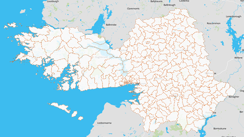

Insight centre for Data Analytics-UIoT
Visualising data for weather station
People & Areas
Investigate the different areas in Galway City and County, with a focus on People and types of industry.
Use interactive maps and charts to view a combination of CSO Census data, along with an industry sector analysis for the full city and county, or at an Electoral Division, or Municipal District level. Use the "Quick Compare" tool to compare a high level overview of multiple areas.
Electoral Division  View Electoral Division Level
Social
Explore data related to Commuting, Housing, and Cultural Infrastructure in Galway City and County.
Data from AIRO, Galway City and County Councils, and the PRTB are made easily accessible using a variety of interactive maps and charts.
Enterprise
Investigate data on Enterprise, Innovation & Employment in Galway City and County, along with a view of the wider regional and national context.
Visualisations include data on Entrepreneurship, Research & Development, Enterprise Support, Employment, Disability and Poverty.
Environment
Explore Environmental data for Galway City and County.
Interactive visualisations present data on Water Quality, Blue Flag beaches, and Waste Management.